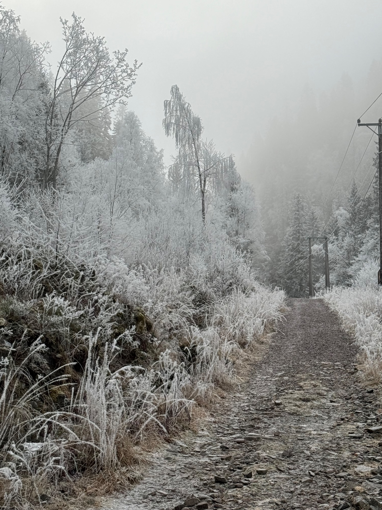

Tasmania
Open alpine scenery, clean air, and a trail that feels easy to stay on and enjoy.
Nature travel
Nature trips are best when the setting itself is the main event. These ideas focus on trails, open views, and quieter pacing.
Open alpine scenery, clean air, and a trail that feels easy to stay on and enjoy.

Steeper ground, exposed rock, and a colder landscape that feels more dramatic in person.